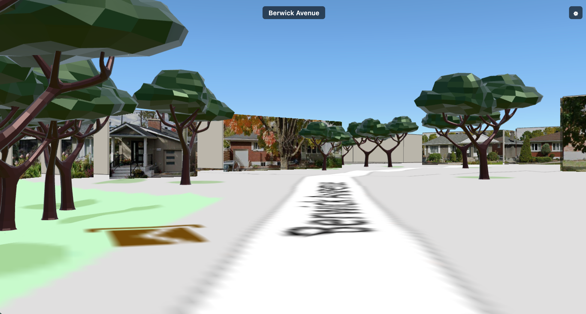

City Drive

City Drive is a browser-based 3D driving simulator for Berwick Avenue, Ottawa — the street I grew up on. Drive at sedan eye-height through a real neighbourhood: building footprints and heights come straight from City of Ottawa and Province of Ontario open data, draped over free terrain, with select walls skinned in rectified Street View photo facades baked offline.
There's no physics and no collision — the camera is surface-locked to the terrain and moves with car-like kinematics (momentum, speed-coupled steering). It's a contemplative drive-around, not a racing game. Everything runs on free, pre-baked data: no Cesium ion token and no live Google APIs at runtime.
- StackVite + CesiumJS + TypeScript
- WorldOttawa LOD1 buildings + LiDAR heights
- FacadesStreet View, projected & baked offline
- Runtime costNone — all data ships static
Controls: W/A/S/D or arrows to drive, Space to handbrake, R to reset. Tip: from the terminal, run open drive.